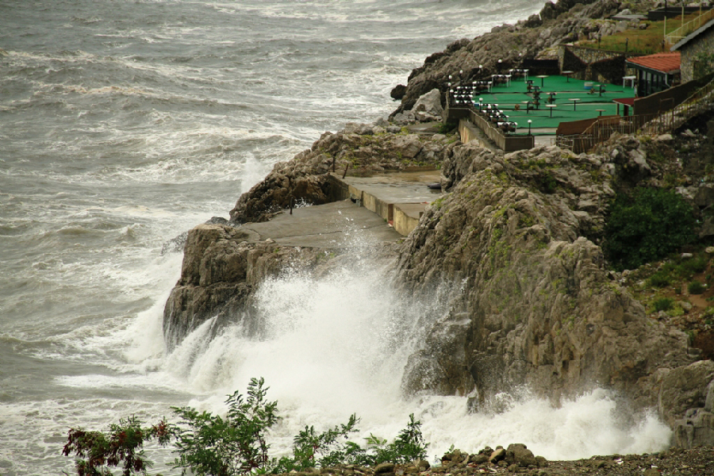
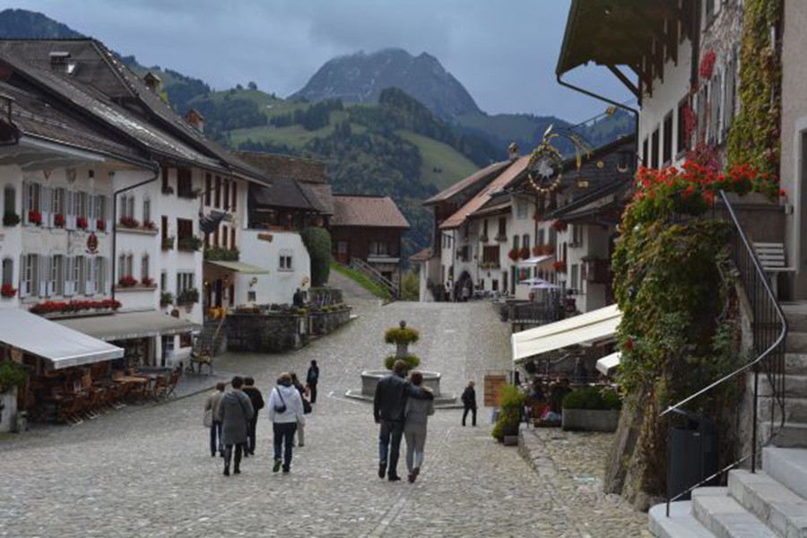
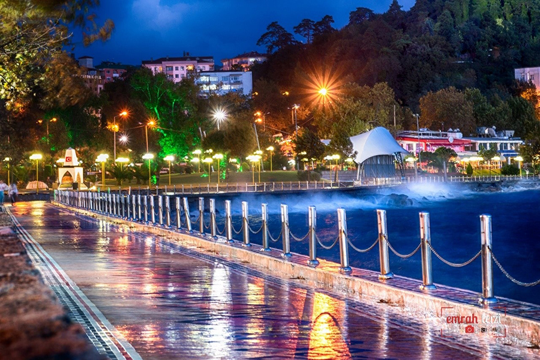
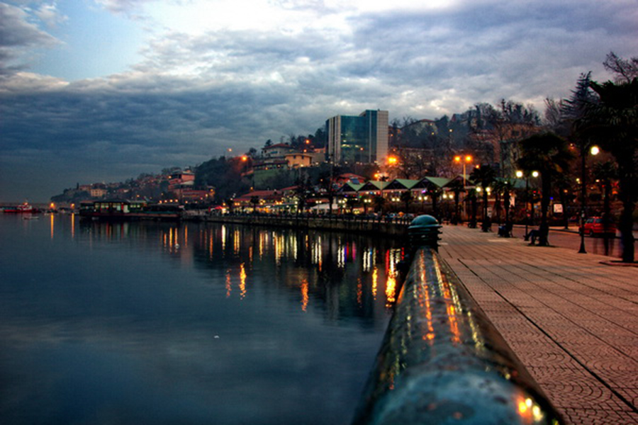
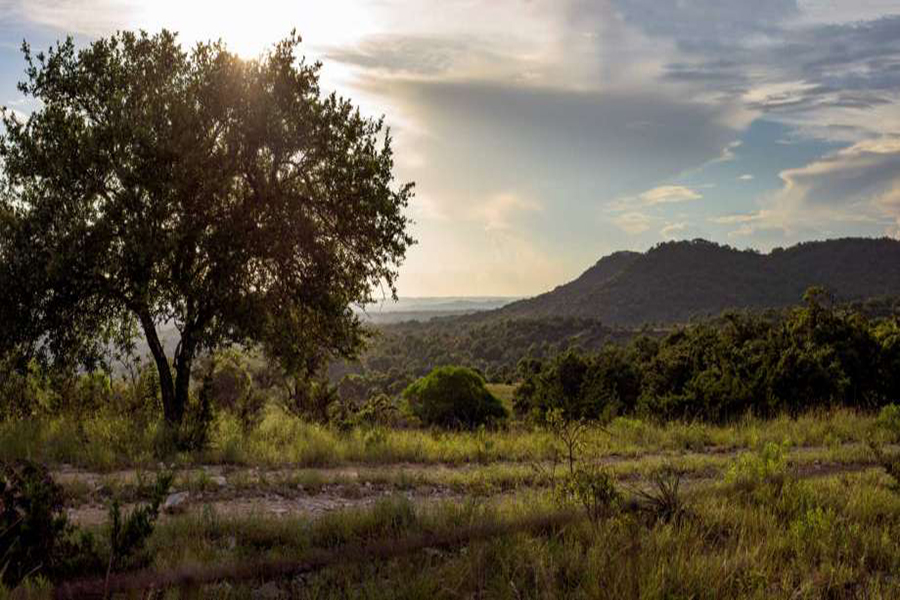
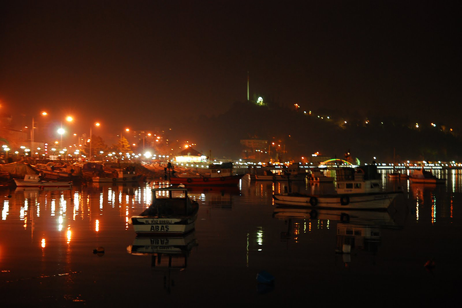
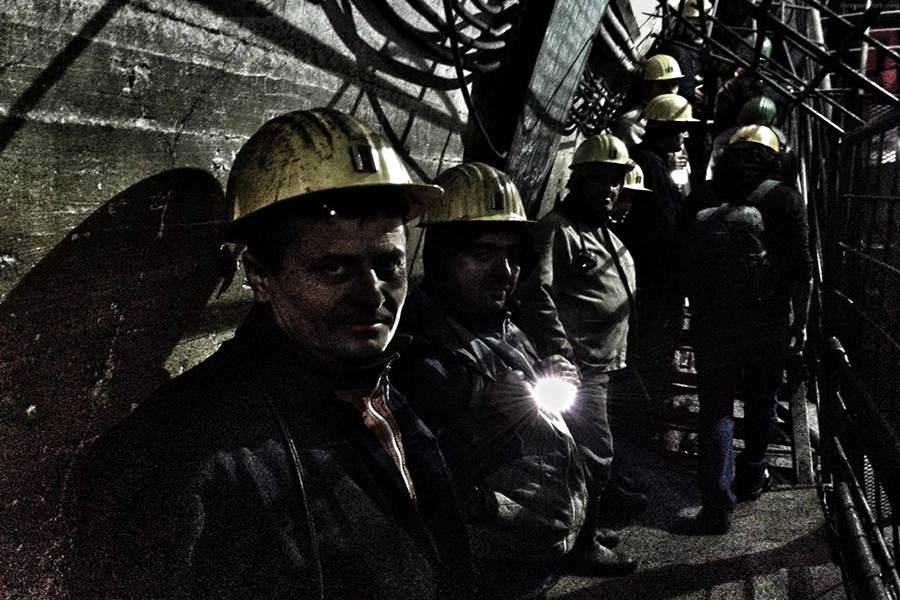
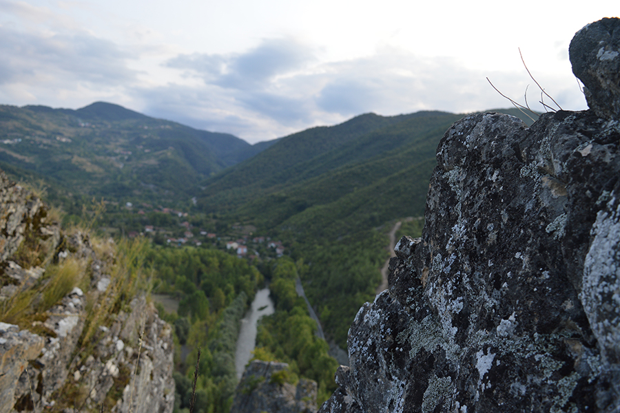
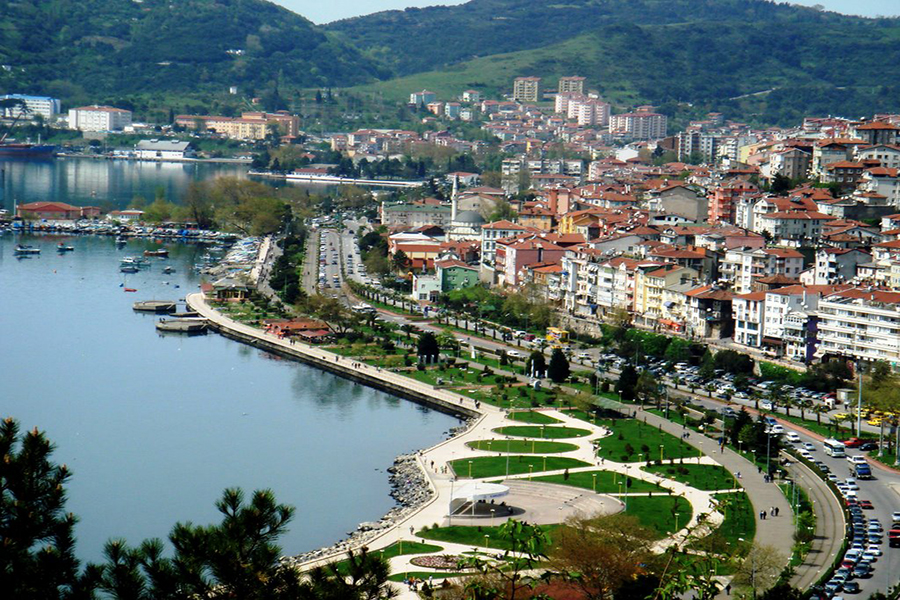
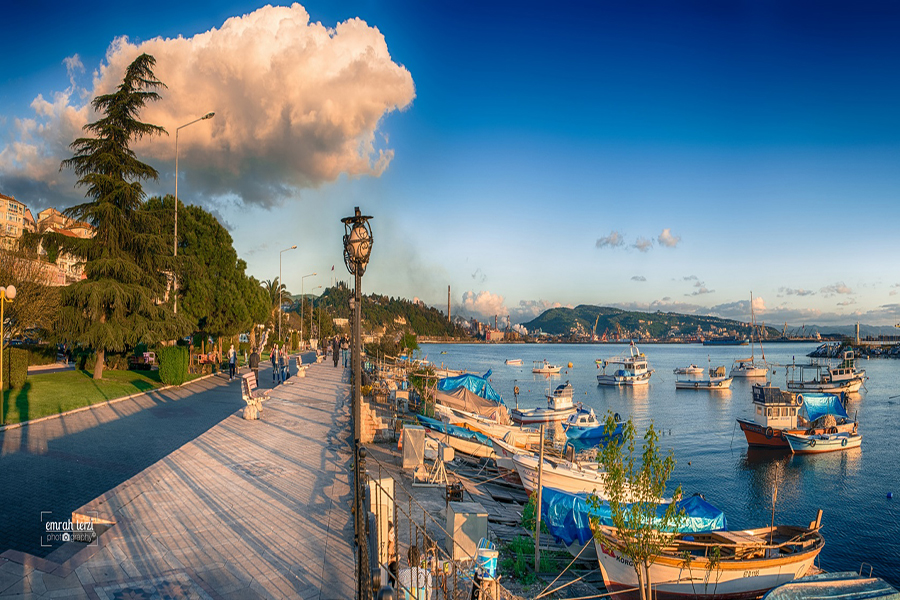

Zonguldak, Türkiye'nin Karadeniz Bölgesi'nin batısında yer alan, Düzce,nin doğusunda, Bolu ve Karabük'ün kuzeyinde ve Bartın'ın batısında yer alan bir sahil kentidir.Zonguldak denilince akla ilk gelen kömür madeni ve madencilerdir.Fakat bu Zonguldak'a yapılan en büyük haksızlıklardan birisidir.Zonguldak özellikle Bolu'ya bakan kısımlarındaki ormanları ile Türkiyede eşsiz bie niteliğe sahiptir.Bunın yanı sıra bu ormanlar domuz, ayı, kurt, çakal, karaca, yaban keçisi, kartal ve yırtıcı kuş türleri başta olmak üzere sayısız yabani türe ev sahipliği etmektedir.
Denizi kara, kömürü kara, yolu yokuş, rüzgarı keskin, yağmuru taşkın, kuşları kuzgun...










geri
ileri
Doğal çeşitlilikler yanında Zonguldak sahillerindeki falezler eşsizdir.Şubat başlarında dalgaların bu falezlerden çıkardığı sesleri dinlemek mutlaka yapılması gereken 100 şey listesine girer.Zonguldak'ın bir sahil ilçesi olan Karadeniz Ereğli, Zonguldak'ın sergi salonu gibidir.Çok güzel sahil unsurları içermektedir.Ayrıca hamsi balığının asıl yeri burasıdır.Burada geleneksel hamsi festivallerine katılabilir hem de para ödemeden hamsiye doyabilirsiniz.
Benim asıl memleketim ise bir sahil kenti olmayan Devrek'tir.Devrek, bastonlarıyla meşhur olan, insanları genelde köylerde hayvancılıkla uğraşan bir kültüre sahiptir.Ormanlık ve dağlık bir coğrafya olan Devrek'e yolunuz düşerse mutlaka "cevizli gömeç" ve "şakşak helvası" yemelisiniz.Ayrıca yedigöllere devrek üzerinden giderseniz geçtiğiniz köylerden yol tarifi alabilir ve köylülerden yöreseş yiyecekleri de kampınıza götürebilirsiniz.